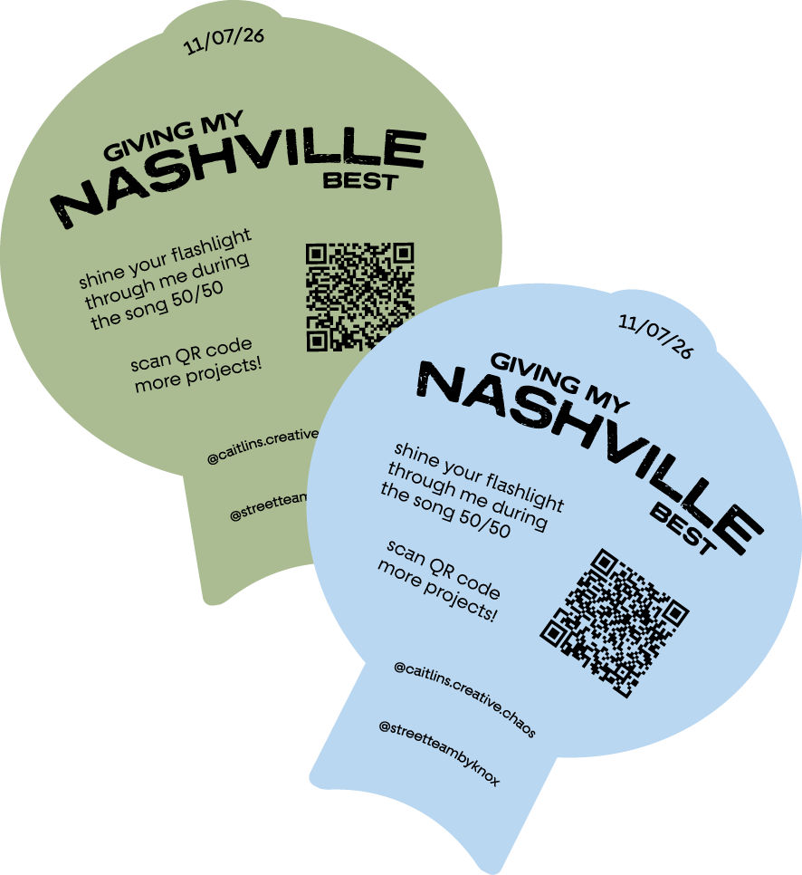
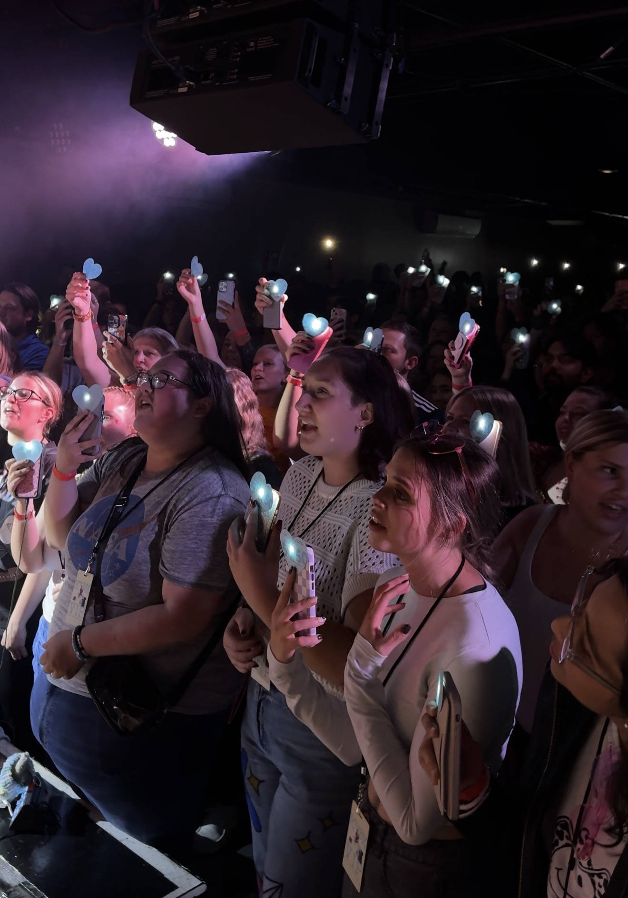
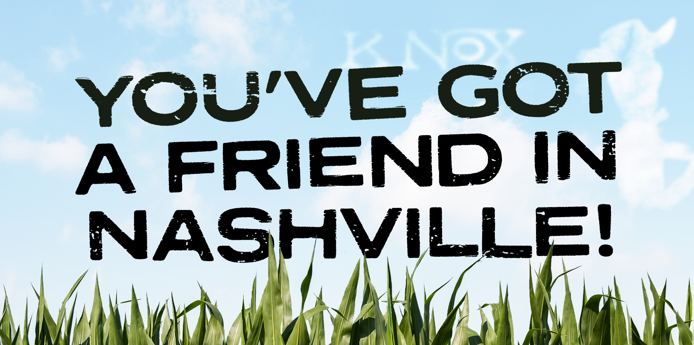
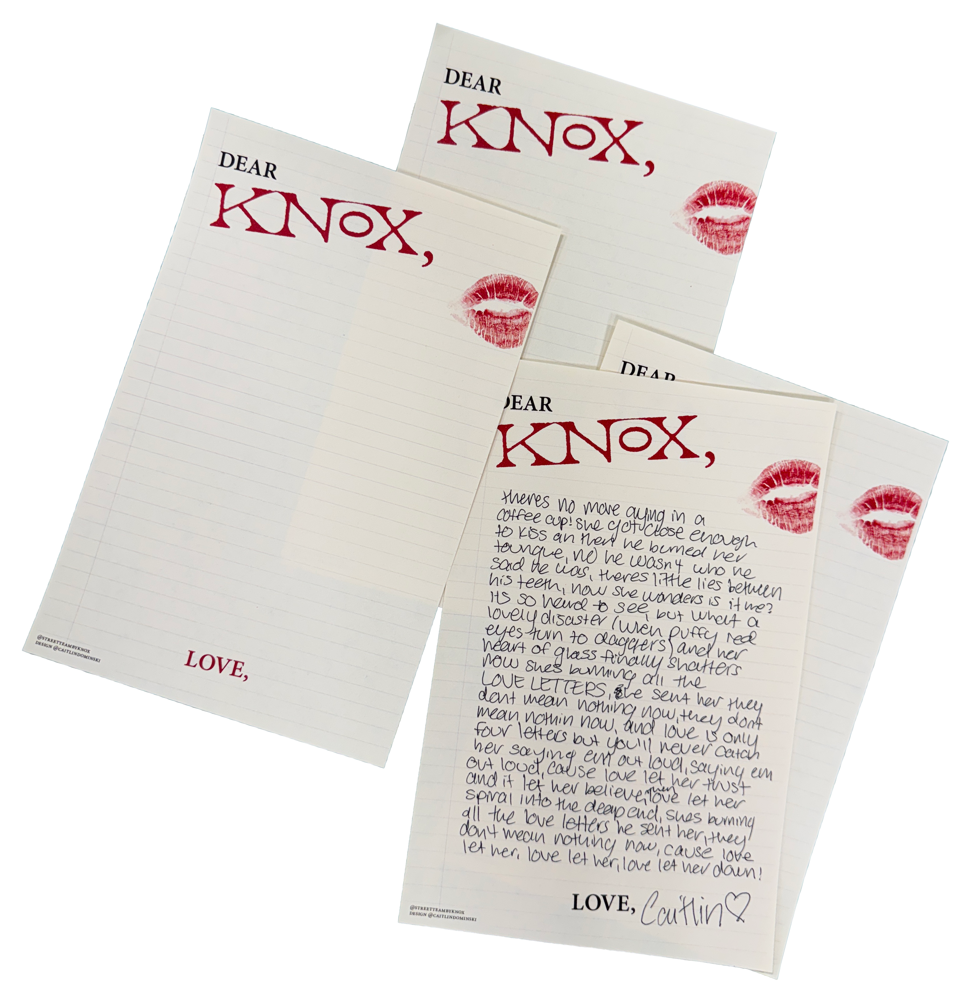
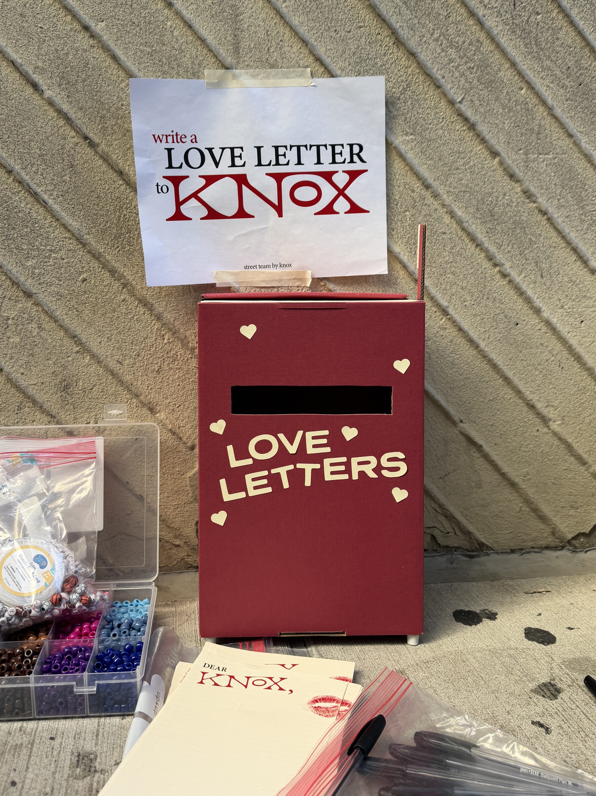

50/50 Watertowers
When Knox plays the song 50/50, shine the flashlight on your phone through your watertower and hold it up in the air!


You've got a friend
in Nashville!
Tonight is the LAST show of Knox's US leg of tour, so we want to do something special to end the show! :)
After Knox sings his last song, (Pick Your Poison), the song "You've got a Friend in Me" will play as the band takes their final bows. As this occurs, we've made a graphic for fans to hold up in the air for Knox to see!
PRESS AND HOLD on the image below to save it to your phone. Try somewhere near the grass at the bottom, it doesn't work super well over the text!

At the end of the night, find the image on your phone, turn your brightness up, and hold it up in the air!
Love Letters
Find the Street Team in line to write Knox a Love Letter! Materials will be on the merch table once doors have opened. Available while supplies last!


Top Secret Tour Project
All tour long, we've been working on a super cool, top secret project.
It is in fact a secret... Knox doesn't know the details so we can't describe it online! But, you CAN keep an eye out for it in line, and/or check the pinned post on our Instagram for more information!